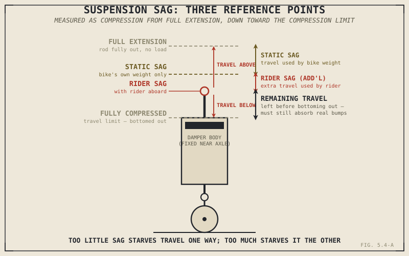

Two riders of noticeably different weight, on the exact same motorcycle with the exact same spring, can both end up with correctly set-up suspension — or both end up with badly set-up suspension — depending entirely on one adjustment neither of them may have ever touched. Sag is the measurement that reveals which is actually true, and it's the practical bridge between everything Chapter 5.2 and Chapter 5.3 explained and a suspension that actually does its job on the specific bike and rider combination in front of you.
Two Measurements, One Purpose
Sag is measured in two stages. Static sag, sometimes called free sag, is how much the suspension compresses under the weight of the motorcycle alone, measured from the suspension's fully extended length with no rider aboard. Rider sag, sometimes called race sag, is measured the same way but with the rider seated aboard in a normal riding position. Both numbers, along with the suspension's total available travel, tell you whether the spring's preload — introduced back in Chapter 5.2 as an adjustment that shifts where the spring starts without changing its rate — is actually set correctly for this specific bike and rider.
The reasoning connects directly back to Chapter 5.1's account of suspension's real job. Too little sag means the suspension sits too high at rest, near full extension, leaving too little downward travel available to keep the wheel in contact with the road as it drops away into a dip — a direct failure of the contact-maintenance job Chapter 5.1 identified as suspension's actual priority. Too much sag means the suspension sits too low, already using up a large share of its travel just supporting static weight, leaving too little upward travel before the first real bump bottoms it out — exactly the failure Chapter 5.2 described a too-soft spring rate risking, except here caused by incorrect preload rather than the spring itself.
Sag isn't a comfort setting or a cosmetic ride-height adjustment. It's the practical, measurable proxy for whether a suspension actually has a sensible share of its travel available in both directions — up into a bump, and down into a dip — for the specific rider sitting on it.

A suspension unit shown at full extension, at static sag under the bike's own weight, and at rider sag with a rider aboard, with the remaining travel above and below each point labeled.
A Common Practical Starting Point
A frequently used general guideline for street motorcycles targets rider sag somewhere around a quarter to a third of the suspension's total travel, front and rear, as a reasonable starting point before fine-tuning further for a specific bike, rider, and riding style. This figure isn't a universal law — different bikes, riding disciplines, and manufacturer specifications vary meaningfully around it — but it's a useful, honest starting point precisely because it tends to leave a workable share of travel available in both directions at once, matching the balance Chapter 5.1's two suspension jobs both depend on.
Measuring it in practice is straightforward in principle: measure the suspension fully extended, unweighted, with the wheel just barely off the ground; measure it again with the bike resting under its own weight; measure it a third time with the rider aboard normally; the differences between these three figures give static sag and rider sag directly.
When Preload Alone Isn't Enough
Preload has a limited range of adjustment, and that limit matters. If a rider's weight is genuinely mismatched to the spring rate installed — a heavier rider on a spring meant for a much lighter one, or the reverse — winding preload all the way to its maximum or minimum may still fail to bring sag into a sensible range. When that happens, the honest diagnosis isn't "adjust preload further." It's that the spring rate itself, the subject of Chapter 5.2, is wrong for this rider, and no amount of preload adjustment can substitute for a spring that was never suited to the load it's actually carrying. This is worth stating plainly because it's a common point of confusion: preload fine-tunes sag within a spring's working range, but it cannot fix a fundamentally mismatched spring rate.
A Common Misconception, Cleared Up Early
It's easy to treat sag setup as a minor comfort adjustment, or worse, a purely cosmetic ride-height tweak — sitting a bike slightly higher or lower to suit appearance or reach to the ground. Chapter 5.1 already made the case that suspension exists primarily to maintain tyre contact, not primarily for comfort, and sag is the practical, measurable check that this actual job can be done at all for the rider currently on the bike. It's also worth separating sag from spring rate directly: sag is a measured symptom, while spring rate and preload are the causes behind it — the same figure can result from a correctly chosen spring with the wrong preload, or an incorrectly chosen spring that no preload adjustment can fix, and only checking sag in the first place reveals which situation you're actually in.
Where This Leads
Sag tells you whether the travel a suspension has is being used sensibly. It doesn't address how much total travel a given motorcycle has to work with in the first place, or why that figure differs so much between an off-road bike and a sportbike. Chapter 5.5 turns to suspension travel directly.
Key Concepts to Remember
- Static sag measures suspension compression under the bike's own weight; rider sag measures it with the rider aboard — both are checked against total available travel.
- Correct sag ensures a sensible share of travel is available in both directions: upward into a bump, and downward into a dip, directly supporting the contact-maintenance job Chapter 5.1 described.
- A commonly used starting guideline targets rider sag around a quarter to a third of total travel, though this varies by bike, discipline, and manufacturer specification rather than being a fixed rule.
- Preload can only fine-tune sag within a spring's working range — if adjusting preload to its limits still can't bring sag into range, the spring rate itself, not the preload, is mismatched to the rider.
- Sag is a measured symptom, not a cause; spring rate and preload are the actual causes behind whatever sag figure results.
Cross-References
| ← Ch. 5.1 | Established suspension's contact-maintenance job as its true priority over comfort; this chapter shows sag as the practical, measurable check on whether that job is achievable. |
| ← Ch. 5.2 | Introduced preload and spring rate; this chapter shows exactly how both interact to produce a measured sag figure, and where preload's adjustment range runs out. |
| → Ch. 5.5 | Covers suspension travel directly, the total figure sag is measured against. |